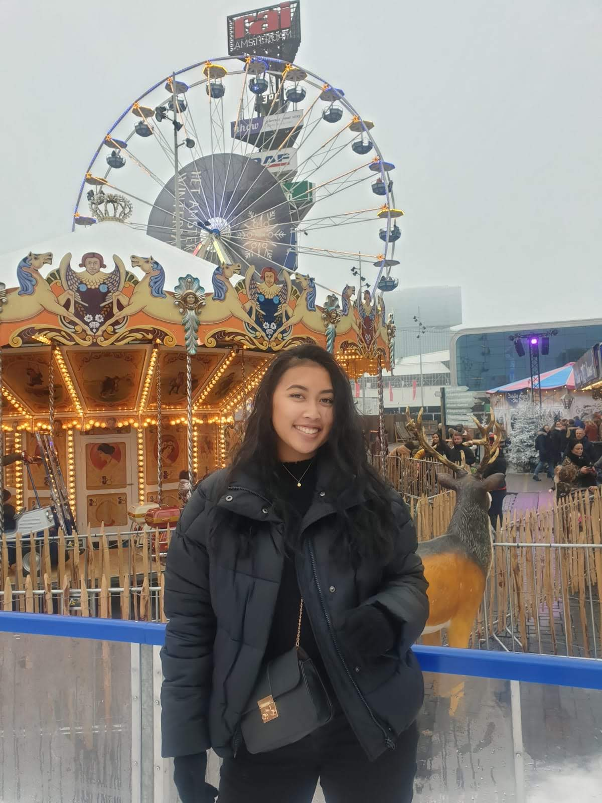

Vanity Kaslim
0944680
CMD2C
Reflectie keuzevak
Wat ik allemaal heb geleerd in deze keuzevak:
- Opzetten van een html/css bestand.
- Foto in html bestand zetten.
- Gekleurde vlakken maken.
- Html bestand koppelen aan een CSS bestand.
- Inleveren in Github.
Actiepunten
- Nog meer verdiepen in alle termen van HTML/CSS.
- Bekijken hoe je een kader met tekst kan maken om een foto heen.
- Slide show maken van foto's
- Html/css interactief maken
- Maken van dropdowns voor menu's
Wat wil ik maken in de toekomst?
Mijn eigen portfolio website :)